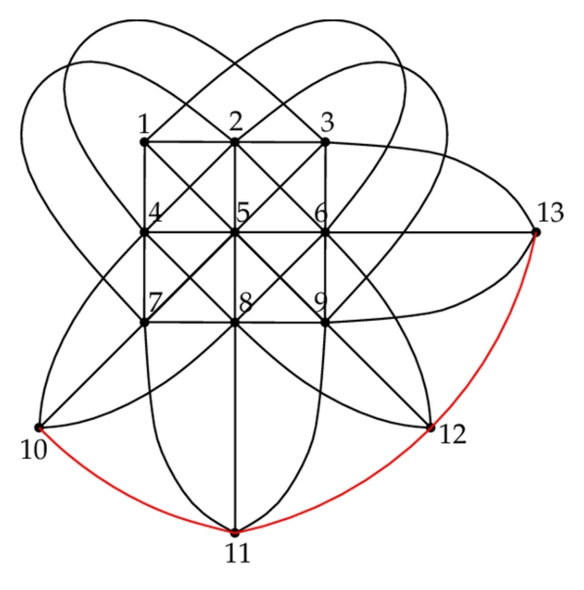

Skip to main content\(\newcommand{\R}{\mathbb R}
\newcommand{\lt}{<}
\newcommand{\gt}{>}
\newcommand{\amp}{&}
\definecolor{fillinmathshade}{gray}{0.9}
\newcommand{\fillinmath}[1]{\mathchoice{\colorbox{fillinmathshade}{$\displaystyle \phantom{\,#1\,}$}}{\colorbox{fillinmathshade}{$\textstyle \phantom{\,#1\,}$}}{\colorbox{fillinmathshade}{$\scriptstyle \phantom{\,#1\,}$}}{\colorbox{fillinmathshade}{$\scriptscriptstyle\phantom{\,#1\,}$}}}
\)
Section 2.3 P(rojective) SET
Each
\(\mathbb{P}\) card consists of two SET cards “glued together”.
Figure 2.3.1. A \(P\)SET card
Definition 2.3.2.
A \(\mathbb{P}\)SET is a collection of 3 cards such that the cards may be flipped over in such a way so that both the top and the bottom form SETs.
Activity 2.3.1.
Verify that the following are \(\mathbb{P}\)SETs.
(a)
(b)
Activity 2.3.2.
(a)
What
\(\mathbb{P}\)SETs can you find here?
Figure 2.3.3. 12 SET cards.
Activity 2.3.3.
Play \(\mathbb{P}\)SET!
Activity 2.3.4.
(a)
What card(s) can you add to form a
\(\mathbb{P}\)SET?
(b)
Out of these cards, how many \(\mathbb{P}\)SETs can you find?
(c)
Pick any two cards, can you find what card(s) if any will complete a set? How many \(\mathbb{P}\)SETs can you find? Repeat.
Activity 2.3.5.
(a)
Pick any three cards who do not form a \(\mathbb{P}\)SET and arrange them in a corner of the \(3\times 3\) grid:

(b)
Fill out this grid so that each line forms a \(\mathbb{P}\)line.
(c)
For each pair of cards on this grid, do they lie on exactly one \(\mathbb{P}\)line?